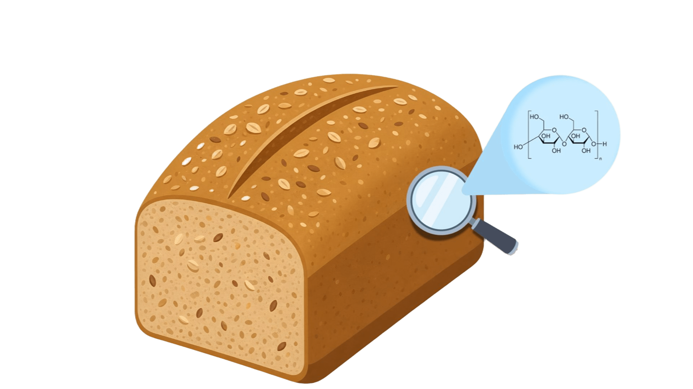
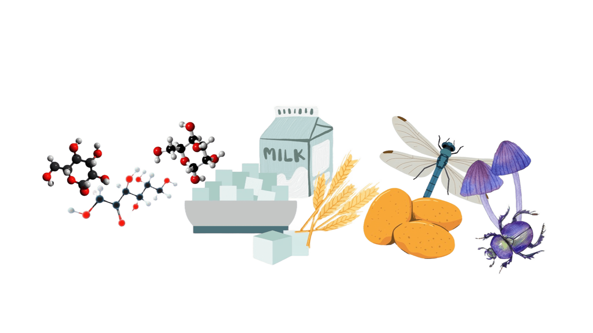
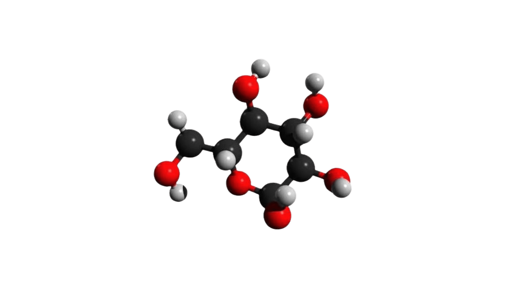
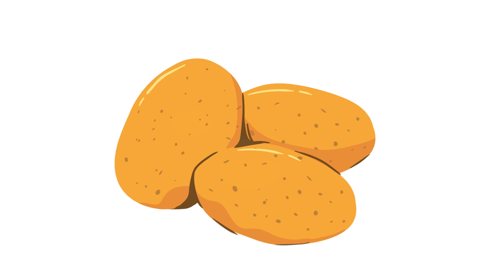

CARBOIDRATOS
Os carboidratos, também chamados de glicídios, são importantes fontes de energia para as células.
O que são carboidratos?
Carboidratos são moléculas orgânicas compostas principalmente por carbono, hidrogênio e oxigênio. Sua principal função é fornecer energia para as células realizarem suas atividades.
Classificação
- Monossacarídeos: uma unidade de açúcar, como a glicose.
- Dissacarídeos: união de dois monossacarídeos, como a sacarose, o açúcar comum.
- Polissacarídeos: longas cadeias de monossacarídeos, como o amido e a celulose.

Exemplos e funções
- Glicose: importante fonte de energia para as células.

- Amido: reserva energética das plantas e presente em alimentos como batata, milho, mandioca e arroz.

A celulose
A celulose é um polissacarídeo com função estrutural, pois forma parte da parede celular dos vegetais. Na alimentação humana, contribui para o fornecimento de fibras importantes para o funcionamento do intestino.No dia a dia
Arroz, batata, milho e mandioca são exemplos de alimentos que contêm carboidratos, incluindo o amido.Saiba mais
A classificação dos carboidratos depende do número de unidades de açúcar que formam a molécula. Essa estrutura está relacionada às suas características e funções.